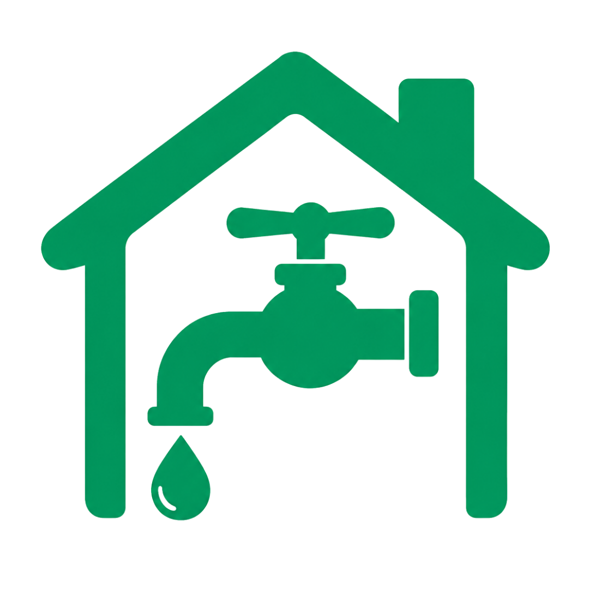

東京都 水道手続き窓口
当窓口にて、水道の
申込・手続きを
スムーズにご案内します。
ご利用はカンタン3ステップ
1
お申し込み
フォーム入力
2
内容確認
お電話で確認
3

使用開始 手続き完了後お電話で水道使用開始
電気・ガス・ネット回線も
一緒にご相談いただけます。
水道の使用開始手続きフォーム
必要事項をご入力のうえ送信してください。
送信後、担当者よりお電話にて内容を確認し、水道の使用開始手続きを進めます。
よくあるご質問
Q.申し込み後はどうなりますか？＋
フォーム送信後、当窓口の担当者よりお電話にてご連絡いたします。内容を確認のうえ、水道の使用開始手続きを進めます。
Q.電話はいつ来ますか？＋
原則として営業時間内に順次ご連絡いたします。お申込み時間帯によっては翌営業日のご連絡となる場合があります。
Q.水道使用開始希望日は指定できますか？＋
はい、ご指定いただけます。フォーム内の「水道使用開始希望日」欄にご希望日をご入力ください。
Q.固定電話でも申し込みできますか？＋
はい、固定電話番号でもお申込みいただけます。市外局番を含む10桁の番号をハイフンなしでご入力ください。
Q.メールアドレスは必須ですか？＋
メールアドレスのご入力は任意です。お電話でのご連絡が原則となります。
Q.電気・ガス・ネット回線も相談できますか？＋
はい、お引越しに伴う電気・ガス・インターネット回線のお手続きも、必要に応じてまとめてご相談いただけます。
本サイトは水道使用開始手続きの代理店窓口です。
お客様の代理として各水道局への申込手続きを行います。
© 東京都 水道手続き窓口